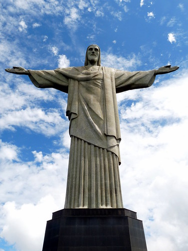

Cristo Redentor
En Rio de Janeiro, ciudad emblematica del Brasil, se encuentra la estatua del Cristo Redentor, conocida tambien como Cristo del Corcovado. Su importante valor simbolico ha promovido las peregrinaciones de los catolicos mas devotos, pero tambien ha atraido la visita de los turistas deseosos de develar los misterios de una de las siete maravillas del mundo moderno. 